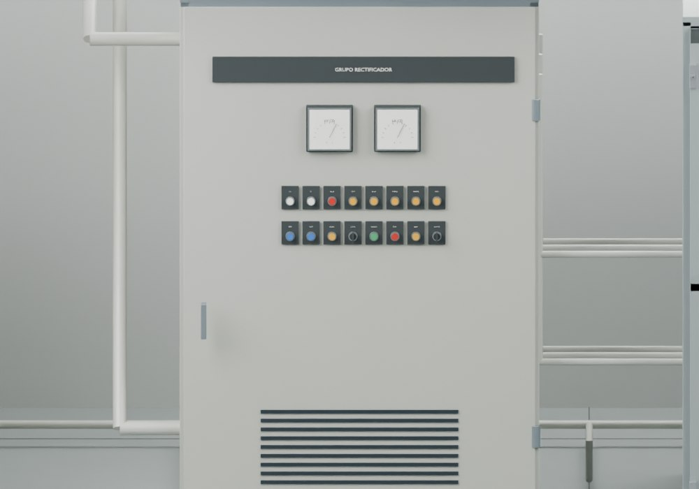
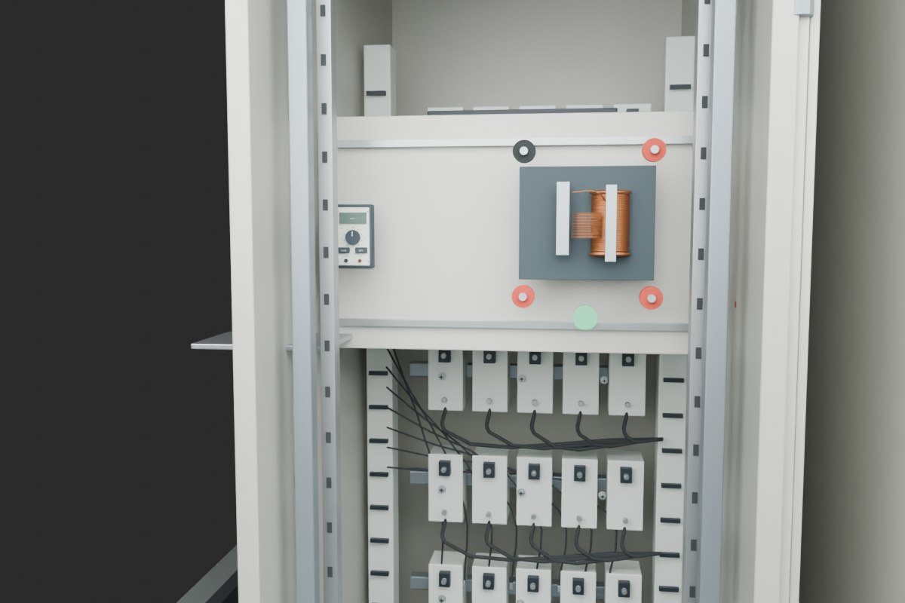

Las seis prácticas de subestación se realizan sobre el equipo montado. El entorno y los gabinetes vecinos permanecen visibles.
Distribución, referencias y verificaciones


155 acciones de puntero verificadas en DOM/CPU. Pendiente comprobación visual interactiva en navegador. Modelo didáctico; no representa un levantamiento de una instalación específica.